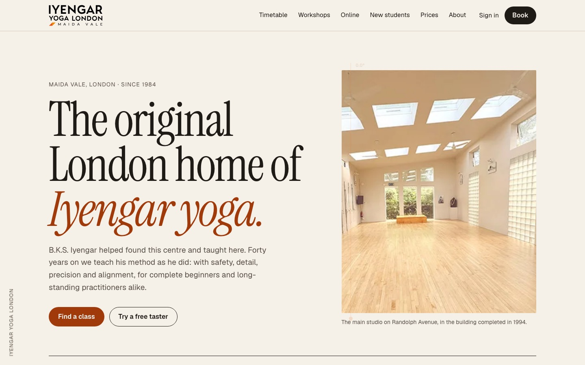
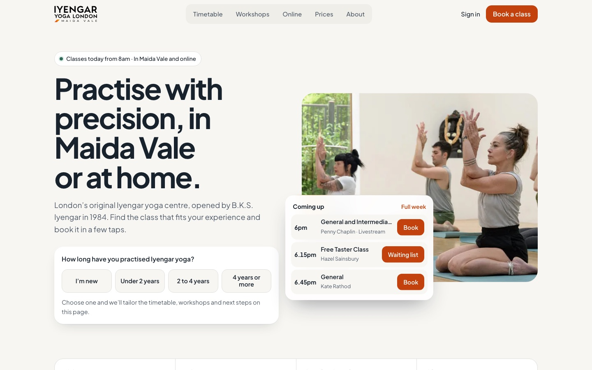
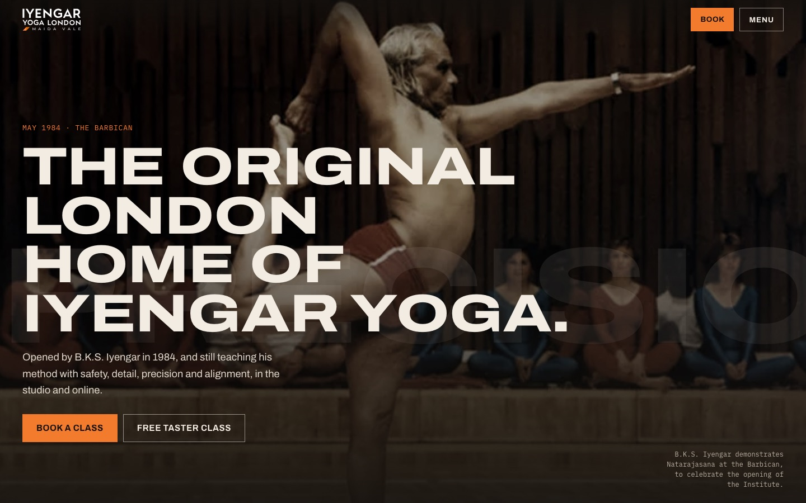

For Iyengar Yoga London · Maida Vale
Three directions for the original London home of Iyengar yoga
We are Mindful Design, a small, values-led team from contemplative traditions. We build websites for Dharma centres and, more and more, for yoga communities. We spent time with your site, your timetable and your history, and imagined three ways your homepage could feel.
This is an invitation rather than a critique. Every page is built and clickable, uses your own words and photographs, and shows your real programme for this week.
One method, taught with care
Safety, detail, precision and alignment are already how you describe yourselves. Each direction expresses that in its own way: in typography, in a booking flow, in a held pose.
Your lineage
B.K.S. Iyengar helped found the Institute and taught here. That story, and your charity status, deserve a place on the homepage, not three clicks away.
One way to book
Classes, livestreams, workshops, tasters and the beginners course share one timetable and one booking sheet in every direction.
A clear first step
Free tasters and the six-week course sit close to the top, with prices and concessions stated plainly, in keeping with your inclusion policy.
The three directions at a glance
Each one has a different palette, typography, layout and scroll behaviour, and each carries the same content: your institute and method, this week’s timetable, workshops, livestreams, first steps, membership, teacher training, newsletter and footer.

Alignment
A printed programme. Warm paper, a fine serif, and photographs that straighten as you scroll.

Practice
Booking first. Calm, app-like, and shaped around how long you have practised.

Lineage
Dark and photographic. 1984 dissolves into today, and a pose is held for a minute.
In all three directions
One booking journey for everything
Today your timetable, class booking and workshop booking live in separate places. In each direction, every “Book” button opens the same sheet: a bottom sheet on phones, a side panel on larger screens, styled to match. It would run on the booking system you already use, so memberships, Yogapasses and the Iyengar Yoga London app carry on working as they do now.
Try it on any class, livestream, workshop, free taster or the Yogapass buttons. Nothing is booked or paid in these prototypes.
- ChooseWhat, when and with whom, the level it suits, and studio or livestream for hybrid sessions. Member, visitor or Yogapass, with prices side by side.
- ConfirmA short summary and one clear button. Studio regulars are reminded they can simply drop in; livestreamers see when the Zoom link arrives.
- BookedWhat to bring or how to join, and an “Add to calendar” file. A full taster offers the next dates or a waiting list; Remedial becomes a short application.
Direction A · Editorial
Alignment
The homepage as a well-made printed programme, in chapters: the Institute, the method, this week, beginning, workshops, online, prices and teachers. Quiet, exact and unhurried.
#F5F1E8#ECE5D7#1E1A15#564E44#A13A0B#3C5266Why
Iyengar yoga is careful, systematic and deeply studied. An editorial page, with chapters, rules and a fine serif, says the same thing before anyone reads a word.
Signature: the adjustment
Photographs arrive a few degrees off true, with a fine plumb line and an angle reading. As you scroll they settle exactly onto the line, the way a teacher’s correction brings a pose into alignment.
Booking
Today’s classes in one running line under the title, then a week of dates set like a printed timetable, with filters for studio, livestream and level.
Best if
You want the site to feel like the Institute: considered, authoritative and welcoming, with nothing loud.
Direction B · Booking first
Practice
Calm and app-like, built around one question: what can I come to? The timetable is the hero, and the page reshapes itself around your experience.
#F7F6F2#FFFFFF#18222D#C2410C#2D6A57#FCEDE3Why
Most visitors arrive on a phone wanting to know what is on, whether it suits them, and how to book. B answers all three on the first screen.
Signature: find your level
“How long have you practised Iyengar yoga?” One tap filters the timetable, the up-next card, the workshops and a set of personal next steps, from a free taster to the Twixtmas Intensive.
Booking
A day strip with a sticky filter bar, class cards with prices, workshop carousel, and a mobile tab bar for Timetable, Workshops, Online and Prices.
Best if
Growing classes and membership is the priority, and you want the site to work as smoothly as your app.
Direction C · Cinematic
Lineage
Dark, photographic and archival. It opens in May 1984 at the Barbican and dissolves into a class at the rope wall today, then lets the method speak.
#13100D#1D1915#F2ECE3#B9AFA1#F27B2E#8CC6AEWhy
Few yoga centres anywhere can say their founder opened the doors. C makes that lineage the first thing people feel, then turns it towards today’s classes.
Signature: hold the pose
A pinned scene beside a photograph of Mr Iyengar. As you scroll, a minute is counted and the text moves through arrive, stay, support and attend: the experience of holding a pose for longer.
Booking
A dark agenda with large times, workshops that travel sideways as you scroll, and a bright saffron “Start here” for tasters and the beginners course.
Best if
You want to stand apart from every other studio in London, and to carry the history of the Institute forward.
Side by side
All three cover the same content, work on phones, meet WCAG AA contrast and keep still for anyone who prefers reduced motion.
| A · Alignment | B · Practice | C · Lineage | |
|---|---|---|---|
| Feels like | A beautifully printed programme | A calm, well-made app | A film about the Institute |
| Hero | Title page beside the studio | Level selector and up-next card | 1984 dissolving into today |
| Timetable | Printed week, serif times | Day strip, cards, sticky filters | Dark agenda, mono times |
| Workshops | Index with a picture that follows | Swipeable cards, level highlighted | A track that pans as you scroll |
| Scroll effects | ●○○ gentle | ●●○ moderate | ●●● rich |
| Photography needs | A few good studio photographs | Works with what you have | Archive and new class photography |
| Build effort | ●○○ lowest | ●●○ medium | ●●○ medium |
Next steps
One direction can be taken as it is, or combined: A’s editorial pages with B’s level selector, for example.
- 1
A conversation
Thirty minutes to hear what matters to your teachers, staff and members, and which direction feels most like the Institute.
- 2
One direction, refined
We develop the chosen direction with your feedback and design the class, workshop and teacher pages.
- 3
Build and hand over
Connected to your booking system, tested with real students, and handed over with training for the team.